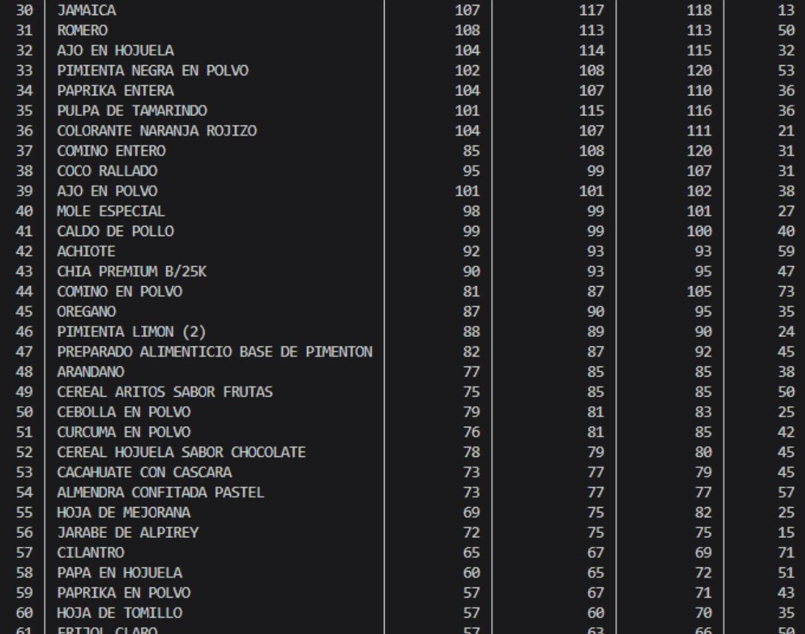
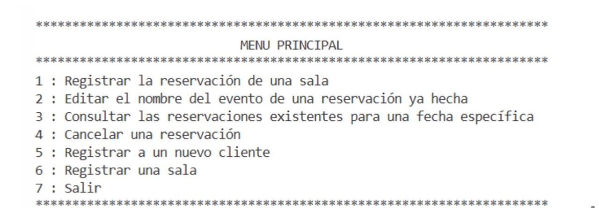
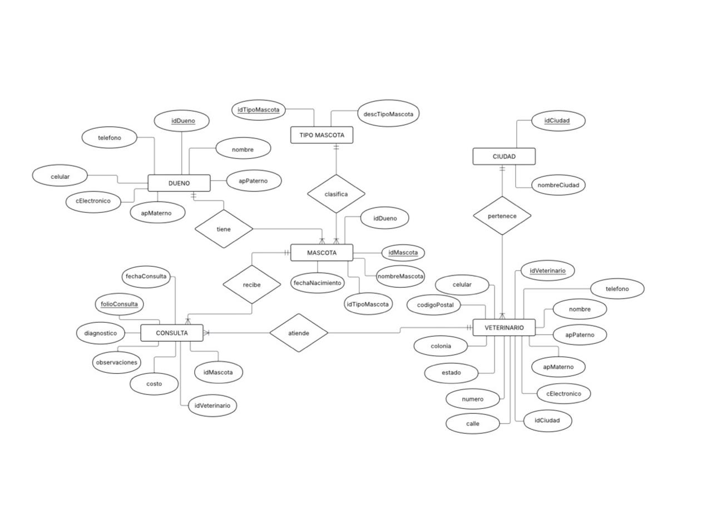
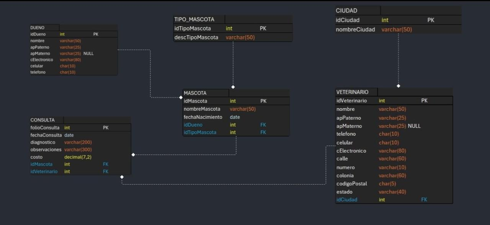
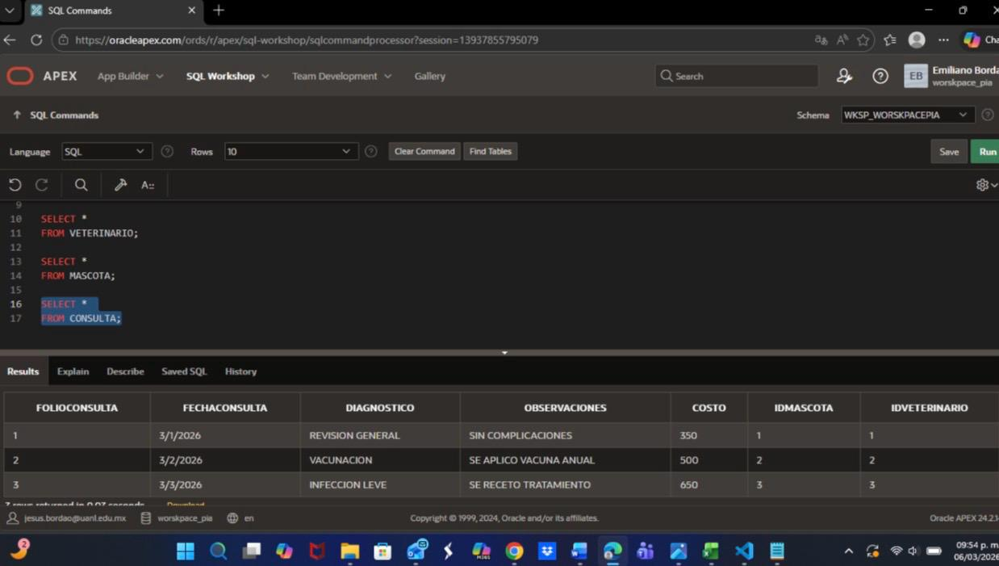

Aqui te contare sobre mis proyectos tecnologicos
Bueno como el titulo lo dice te mostrare algunos de mis proyectos como estudiante..
Programación (Python)
def saludar():
print("Hola Mundo")
- Este primer proyecto era una aplicación desarrollada en Python operada puramente desde la consola,
diseñada para llevar un control estructurado, registro detallado y gestión eficiente de cuentas por
cobrar de manera local, optimizando la lógica de negocio y el manejo de datos en texto.
Sistema de cuentas por cobrar - link Github

- Proyecto académico desarrollado en colaboración para poner en práctica estructuras de datos avanzadas,
manejo robusto de excepciones y errores, análisis de información mediante la librería Pandas y persistencia
conectada a bases de datos con SQLite.
Sistema de reservaciones - link Github

Programación de Bases de Datos (SQL)
CREATE TABLE ALUMNOS
(
idAlumno NUMBER(5) NOT NULL,
apP VARCHAR2(25) NOT NULL,
apM VARCHAR2(25) NOT NULL
);
- Diseño e implementación de una base de datos relacional completa para una clínica veterinaria, abarcando desde el modelado con
diagramas Entidad-Relación y relacional, hasta su despliegue y gestión en Oracle APEX. Incluye la programación de bloques
anónimos y procedimientos almacenados (stored procedures) para optimizar la lógica y la manipulación de los datos directamente en
el servidor.
En esta ocasion no cuento con el link de un repositorio pero si te adjunto pruebas:



Proyecto de Visualización de Datos
Desarrollo enfocado en el procesamiento, análisis y representación gráfica de información utilizando scripts en Python. Aquí puedes consultar el documento completo con los diagramas y resultados: